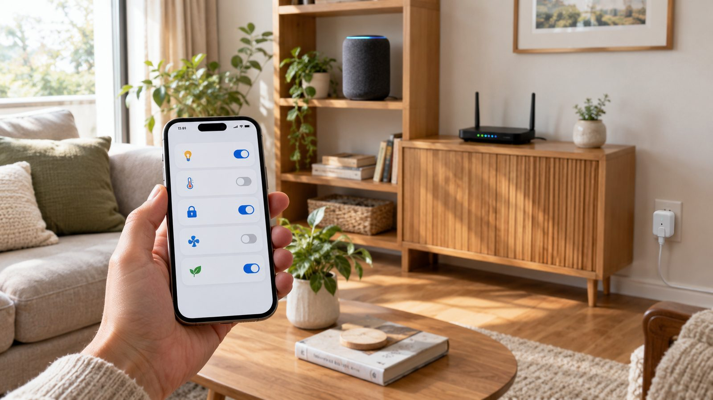
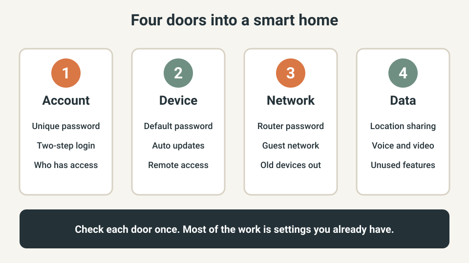
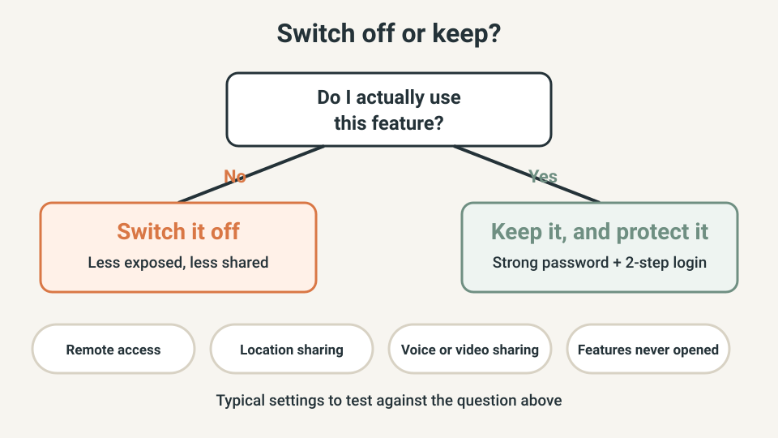
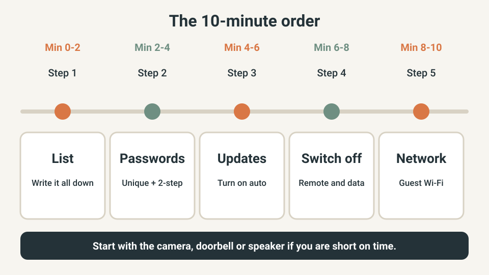

SMART HOME · PRIVACY & SECURITY
Smart Home Privacy Check: Lock Down Your Devices in 10 Minutes

Most worries about smart homes, a stranger watching a camera or a speaker that shares more than you expected, start with ordinary settings left on their defaults. The good news is that the basic fixes are free and live in apps you already have.
This guide gives you a ten-minute order of work: five short steps, one device group at a time, based on public advice from the UK National Cyber Security Centre (NCSC) and the US National Cybersecurity Alliance. No new gadgets needed.
The quick answer
- Change every default password, and use a different password for each account (a password manager or three random words works well).
- Turn on two-step login wherever the app offers it.
- Switch on automatic updates for every device that has the option.
- Switch off remote access, location sharing and other features you do not use.
- Put smart devices on a guest network if your router has one.
- Remove and reset a device before you sell, give away or bin it.
I am not a security professional. This is a basic hygiene check built from public guidance, not a guarantee that nothing can go wrong. If a device behaves strangely, follow the maker's reset steps and ask their support team.
Quick plan
| Item | Detail |
|---|---|
| Time | About 10 minutes for the whole home, or 10 minutes for just your camera or doorbell |
| Cost | Free |
| Best for | Beginners with a few smart plugs, bulbs, speakers or cameras |
| Goal | Close the easy doors before anyone tries them |
Step 1: Know the four doors into your smart home (2 minutes)
Open your phone and list every connected thing: plugs, bulbs, speaker, TV or streaming stick, camera, doorbell, baby monitor, robot vacuum, thermostat, and the router. Next to each, note which app or account controls it. Devices you forgot about tend to be the ones that never get updated.
Every device has four doors: the account that controls it, the device itself, the network it sits on, and the data it collects. The rest of this guide takes them in that order.

Step 2: Fix the passwords and add two-step login (2 minutes)
If a device came with a default password, change it now. The NCSC explains that a criminal who knows the password can log in and use the device to reach your network. Then give each app account its own password. The NCSC suggests three random words as an easy way to build a strong one.
- Start with cameras, doorbells, baby monitors and speakers, because they see or hear your home.
- Turn on two-step login (2FA) in the app if it is offered. The NCSC points out that remote access makes this more important.
- Check the router label too. A router left on its default admin password is a known weak point.
Step 3: Switch on updates (2 minutes)
Makers release updates to fix bugs and security problems, and a device that is not updated becomes easier to attack. In each app, look for a setting called Updates, Firmware or About, and switch on automatic updates if it exists. If it does not, install updates when the app asks, and check once a month.
Step 4: Switch off what you do not use (2 minutes)
The NCSC advises switching off remote access if you do not need to reach a device away from your home Wi-Fi. The National Cybersecurity Alliance adds that many devices ship with settings that favour sharing, such as behaviour and location data, and suggests setting them to a level you are comfortable with.

Look in each app under Privacy, Sharing or Permissions. Check remote access, location, voice or video sharing with the maker, and any feature you have never opened. If you are unsure what a setting does, leave it and read the maker's help page before you change it.
Step 5: Give smart devices their own corner of the Wi-Fi (2 minutes)
The National Cybersecurity Alliance suggests keeping smart devices on a guest network. In your router app or settings, create a guest network with its own strong password, then move your plugs, bulbs, speakers and cameras onto it. Keep laptops and phones on the main network.
Some devices can only be set up while your phone is on the same network, and a few features may not work across networks. If a device stops responding, move it back and keep the other steps in place.
The 10-minute order at a glance

When you sell, give away or throw away a device
Remove the device from your account and reset it to factory settings using the maker's instructions before it leaves your home. The NCSC guidance includes a section on getting rid of devices, and the maker's support page will list the exact reset steps.
US, UK and EU: the rules differ, the habits do not
In the UK, the NCSC says a security law now stops makers from supplying devices with default passwords. That helps with new products, but it cannot fix a camera that has sat on your shelf for years. Rules for makers differ by country and keep changing, so treat the steps above as the baseline wherever you live.
What not to buy yet
- A paid smart home security service, before you have done the free settings above.
- A very cheap camera or doorbell from a maker that does not say how long it will send updates.
- More gadgets, until you know what the ones you own are sharing.
Quick win (10 minutes)
Pick the one device that sees or hears your home: a camera, doorbell, baby monitor or speaker. Change its password, turn on two-step login for its app, switch on updates and switch off remote access if you never use it. That covers the biggest risks in one short session.
Common mistakes
- Reusing one password for the router, the apps and your email.
- Fixing the camera but forgetting the router.
- Switching off update notifications to stop being nagged.
- Leaving old devices connected after you stop using them.
- Sharing your own login with guests instead of using the app's invite or share feature, if it has one.
Frequently asked questions
Is changing the default password really necessary?
Yes. The UK National Cyber Security Centre says a device is not secure if someone can guess its password, and tells owners to change any default password during setup. Default passwords are often shared online, so they are the easiest door to open.
Should smart devices go on a guest network?
It is a good habit if your router offers one, because a problem with one gadget then has a harder time reaching your laptop or phone. Some devices need to be on the same network as your phone during setup, and a few features may stop working across networks. If something breaks, move it back and keep the other steps.
Do I have to turn off remote access?
Only if you do not need it. If you never check a camera or lock from outside your home Wi-Fi, switching remote access off removes one way in. If you do use it, keep a unique password and two-step login switched on.
What if a device no longer gets updates?
Plan to replace it. Until you do, keep it on the guest network, switch off remote access and any feature you do not use, and consider unplugging it when you do not need it, for example an old camera.
What should I do if I think someone has taken control of a device?
Follow the maker's instructions to reset it, change the password on the device and on its app account, then set it up again with the steps above. The NCSC has guidance on this, and the maker's support page is the best place for device-specific steps.
Keep going
- What can you safely plug into a smart plug?
- Test what still works when your Wi-Fi goes down
- Smart lighting without the headaches